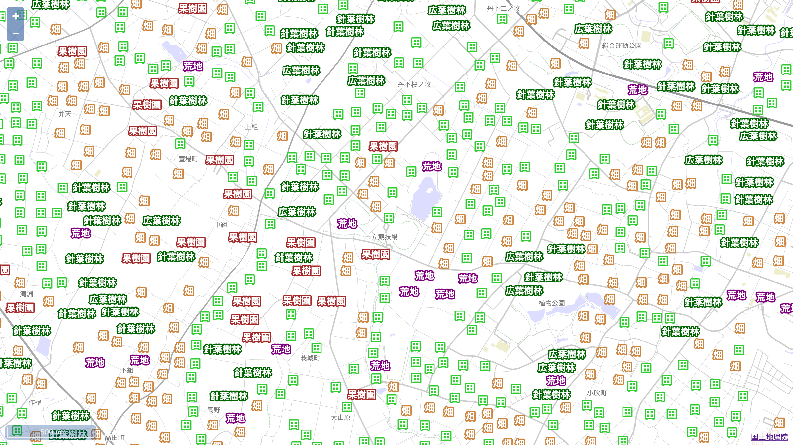
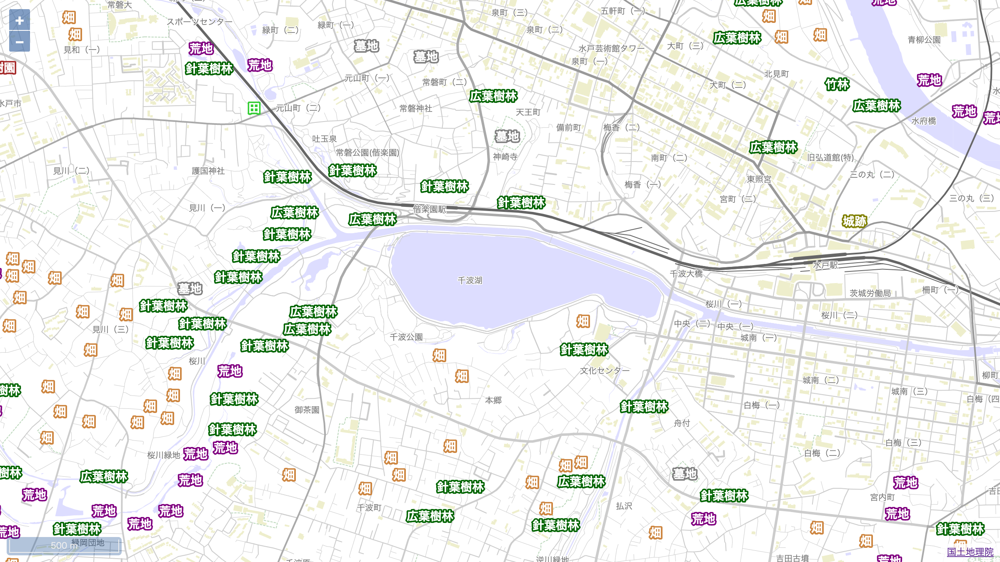
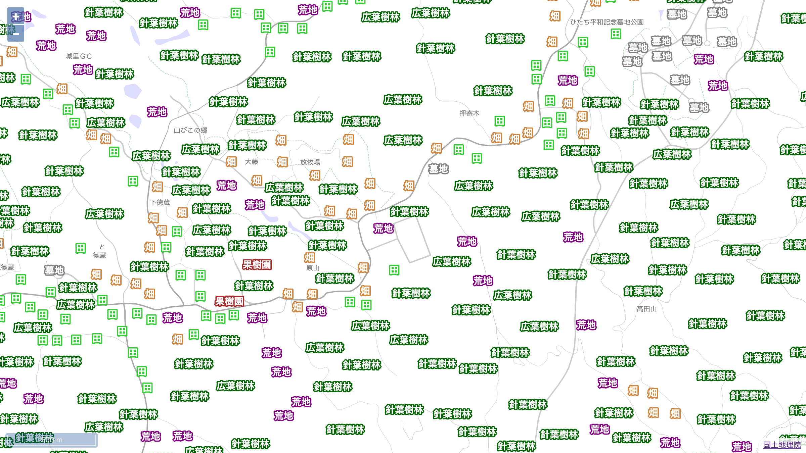
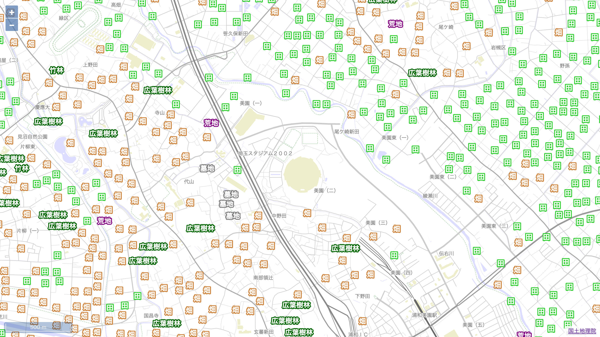

土地利用を文字で見る地図を作りました。
 ケーズデンキスタジアム水戸周辺
土地利用地図
https://cieloazul310.github.io/figure/landuse-map/
制作
国土地理院のバイナリベクトルタイルを OpenLayers で表示で作成したプロジェクトをほぼそのまま利用したので、思いついてから完成まで2時間かからないくらいで完成しました。
広告
ソース
ベクトルタイルの記号レイヤーを色分け文字として表示しています。土地利用が一目でわかる！と思ったのですが、実はこれ全て地形図や地理院地図には普通に記号として載っている情報なんですよね。
普段いかに地図記号を見ていないか（見えていても頭で処理していないか）自覚しました。
ギャラリー
 水戸市街
 アツマーレ周辺
 埼玉スタジアム2002周辺
問題
Xcode のシミュレータを使って iOS 版の Safari で動かしてみたら頻繁に落ちてしまいました。コンソールを開くと “Total canvas memory use exceeds the maximum limit…” と出てきて、どうやら iOS 版 Safari の canvas のメモリ制限に引っかかってしまったようです。一応、キャッシュの量を制限することで対処していますが、より効果的な対策は今後考えていきたいです。
safari(iOS12)で”Total canvas memory use exceeds the maximum limit”が出る場合の対処法 | Qiita
今夜浮かれたい / キイチビール＆ザ・ホーリーティッツ (2019)
広告